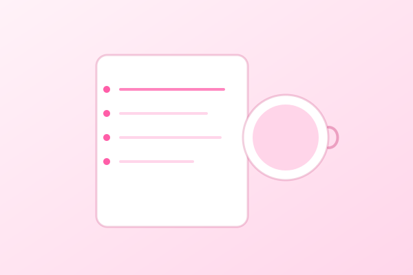
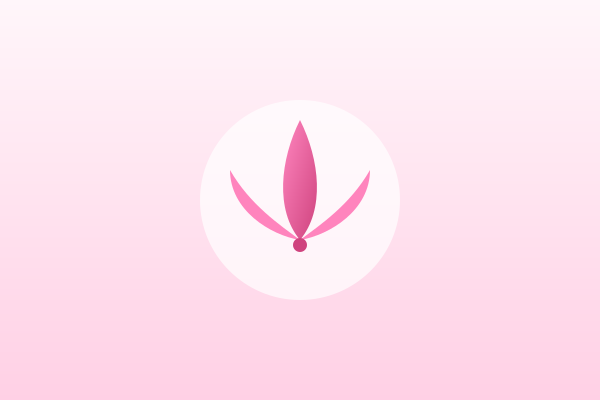
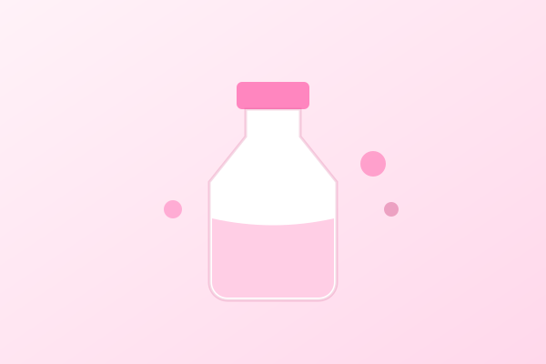

Последние статьи
Читайте наши новые советы и научные рекомендации для здорового образа жизни.
База знаний
Гайды и советы по привычкам
Пошаговый план
Как внедрить привычку за 5 простых шагов
- Начните с микро-действия: делайте зарядку всего 2 минуты в день, чтобы мозг не сопротивлялся.
- Привяжите к триггеру: выполняйте новое действие сразу после старого (например, стакан воды после чистки зубов).
- Уберите лишнее трение: готовьте спортивную форму или книгу с вечера.
- Фиксируйте факт выполнения: ставьте отметку в трекере сразу же.
- Не пропускайте дважды: если один день выпал, обязательно вернитесь на следующий.

Рутина
Магия первых 30 минут утра
Почему отказ от соцсетей сразу после пробуждения меняет уровень тревожности на весь день.

Осознанность
Как не бросать привычки через неделю
Психологические ловушки перфекционизма и почему важно хвалить себя за маленькие победы.

Энергия
Водный баланс и продуктивность
Простые способы пить норму воды без мучений и насилия над организмом.